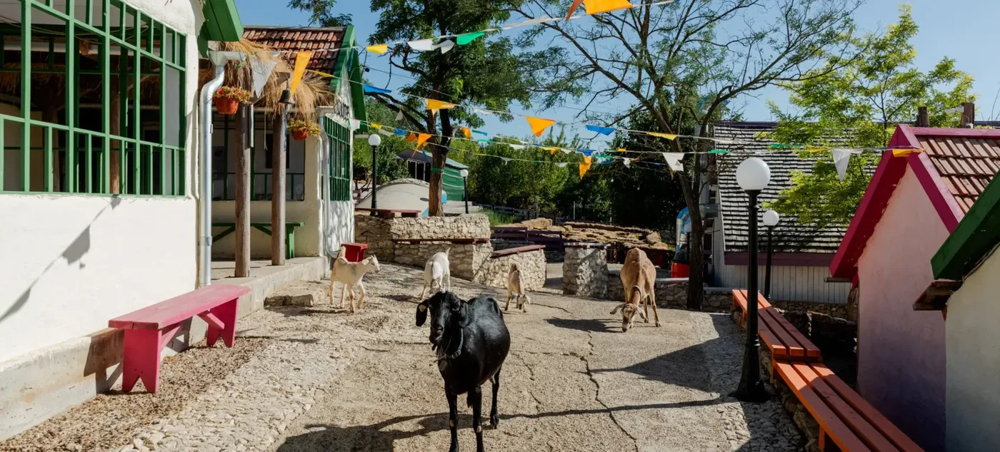

Choose the host's rule and run the rounds. A host who does not know will sometimes open the car by accident; those rounds are thrown out, so both hosts are compared on rounds in which a goat was shown. The chart tracks the cumulative win rate for each strategy under each rule.
| Host | Strategy | Rounds | Wins | Win rate | 95% CI |
|---|---|---|---|---|---|
| Knows | Stay | 0 | 0 | – | – |
| Knows | Switch | 0 | 0 | – | – |
| Random | Stay | 0 | 0 | – | – |
| Random | Switch | 0 | 0 | – | – |
After the host opens a goat, two doors remain, so the common guess is 1/2 each and switching changes nothing. That guess treats the two closed doors as symmetric. One was chosen by you; the other was left closed by a host who knew where the car was.
Both other doors hold goats, so the host may open either. Staying wins.
The host must open the only other goat, and the door he leaves closed is the car. Switching wins.
Nine equally likely combinations of car position and first pick.
| Pick 1 | Pick 2 | Pick 3 | |
|---|---|---|---|
| Car behind 1 | stay wins | switch wins | switch wins |
| Car behind 2 | switch wins | stay wins | switch wins |
| Car behind 3 | switch wins | switch wins | stay wins |
Let A be the event that the car is behind your door and B the event that the host opens the door he opens. P(A | B) = P(B | A) P(A) / P(B). If the car is behind your door the host chooses between two goats, so P(B | A) = 1/2. If the car is behind the other closed door he had no choice, so the likelihood is 1. Equal priors and likelihoods of 1/2 against 1 give posterior odds of 1 against 2.
A host who opens one of the other doors at random, and happens to show a goat, had a 1/2 chance of that reveal whichever closed door holds the car. The likelihoods are equal, the posterior equals the prior, and 1/2 each is then correct. Same observation, different rule, different answer.
One car among 100 doors. Choose one.
Your door holds the car 1 time in 100. The host had to step around the car 98 times, so the one door he left shut carries the other 99. With three doors the same rule applies; the host only steps around the car once, so the intuition fails.
In observational research the host is whatever assigns people to a treatment: their own choices, an institution, a geography, or a policy threshold. A randomised trial is the random host, and the raw comparison is correct. Outside a trial the assignment rule is tied to the outcome, and the analyst has to state the rule and use the rule. That statement is the identification assumption. Parallel trends in difference-in-differences, the exclusion restriction in instrumental variables, continuity at the cutoff in regression discontinuity, and the donor-pool assumption in synthetic control are each a claim about the host.
The host's rule has become the identification assumption. The next page runs the regressions in Stata: first an association, the table a dissertation reports, then a difference in differences in which a frost assigns the treatment, and parallel trends is the assumption that has to hold.
Go to the do-fileImages: Kozy goat village by LH47 Architects, Pohrebea, Moldova; the pink convertible, Palm Springs, photographer not recorded